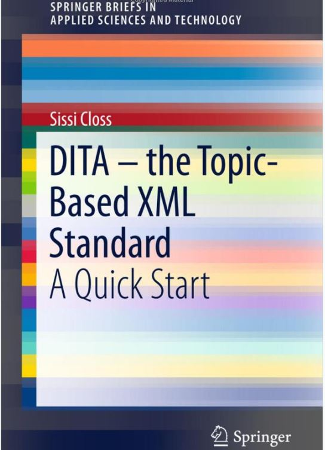

Inapoi la CUPRINS
2. Basic Principle for DITA: Topic-Oriented Structuring
2.1 What is a Topic?
2.2 Why Topic Types?
2.3 How to Use a Topic?
2.4 What are Nested Elements?
Not every snippet of content is a good topic. As the example of the term definition shows, a topic should be a self-contained piece of context-independent as possible, containing a key statement and making sense on its own.
DITA Topic
DITA topics should conform to the topic rules and they must have a title and a particular topic type. In file-based management, each DITA topic is usually stored as a separate file.
"Information Type" refers to the focus on categorisation of information. (Typing means categorisation in this context, not keyboarding!)
"Architecture" indicates that DITA is not just an XML standard; it is an approach, a workflow, a methodology, and a philosophy.
One good, short definition of DITA is:
DITA defines an XML architecture for designing, writing, managing, and publishing many kinds of information in print and on the Web.

Content in DITA is authored in topics, rather than in larger documents or publications. A DITA topic must make sense in its own right. A topic is authored as a unit, not as part of a larger document.
DITA has a topic-based architecture, requiring a topic-based approach to document authoring. The term topic can be thought of as being short for topical information unit, or a topical unit of discourse.
A topic-based architecture opens up the opportunity for large scale content re-use. Topics are assembled from a single pool or repository into different deliverable documents. Topics can be used in different publications, provided the topic makes sense when read in different contexts.
A special DITA file called a map or ditamap is used to specify topics to be included in a deliverable document. The ditamap doesn't store much content; it mainly comprises of pointers to the topics that contain the content.
Not only does a topic-based architecture allow information to be re-used, it also makes translation and localisation more efficient because the same information never has to be translated more than once.
DITA enables modular document development. Not only can topics be re-used, but any group of topics or elements can be treated as a modular document component.
Modularity is the technique of building large complex things in smaller, self-contained pieces. Modular furniture is a good example of modularity in practice. Instead of being one large piece, a modular couch may be four pieces that can be arranged in different ways to form different couch configurations.
Creation of a manual can also be modularised. Instead of being constructed as one piece, a large manual may be designed as a collection of different modules, and those modules can be arranged into different configurations to create different manuals. Modular manuals are easier to maintain, and can be produced more efficiently. A ditamap referencing a group of topics can be embedded within another ditamap, just as a set of elements within a single topic can be re-used in many different topics.
XML technologies (such as XPath) make modularity technically easy to implement. DITA can take advantage of such complementary XML technologies.
DITA enables modular document development. Not only can topics be re-used, but any group of topics or elements can be treated as a modular document component.
Modularity is the technique of building large complex things in smaller, self-contained pieces. Modular furniture is a good example of modularity in practice. Instead of being one large piece, a modular couch may be four pieces that can be arranged in different ways to form different couch configurations.
Creation of a manual can also be modularised. Instead of being constructed as one piece, a large manual may be designed as a collection of different modules, and those modules can be arranged into different configurations to create different manuals.
Modular manuals are easier to maintain, and can be produced more efficiently.
A ditamap referencing a group of topics can be embedded within another ditamap, just as a set of elements within a single topic can be re-used in many different topics.
^SUS
2. Basic Principle for DITA: Topic-Oriented Structuring
2. Basic Principle for DITA: Topic-Oriented Structuring
2. Basic Principle for DITA: Topic-Oriented Structuring
2. Basic Principle for DITA: Topic-Oriented Structuring
2. Basic Principle for DITA: Topic-Oriented Structuring
2. Basic Principle for DITA: Topic-Oriented Structuring